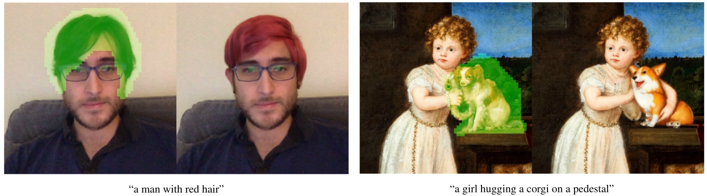
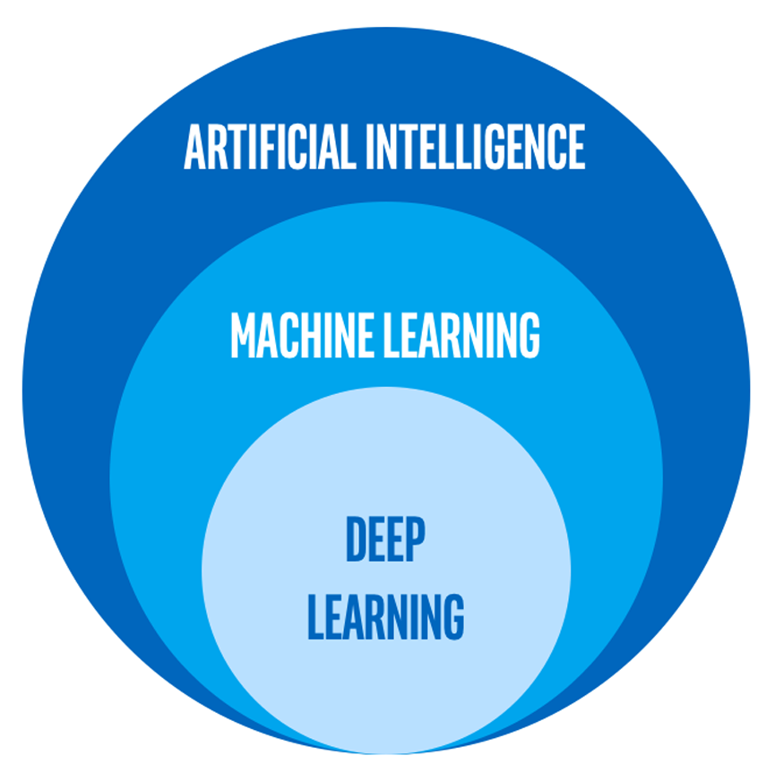

#1 Introduction +
Where is the digital
revolution?
Alex Flückiger
Faculty of Humanities and Social
Sciences
University of Lucerne
03 March 2022
AI is a moving target with respect to …
🙈 Not really, Arizona is not by the sea.

Can you disenchant them?

AI = from humankind import solutionCoding is a superpower …
… to tackle complex problems on scale
directed country mentions in UN speeches
🤓 inputs are more than welcome!
| Date | Topic |
|---|---|
| 03 March 2022 | Introduction + Where is the digital revolution? |
| 10 March 2022 | Text as Data |
| 17 March 2022 | Setting up your Development Environment |
| 24 March 2022 | Introduction to the Command-line |
| 31 March 2022 | Basic NLP with Command-line |
| 07 April 2022 | Learning Regular Expressions |
| 14 April 2022 | Working with (your own) Data |
| 21 April 2022 | no lecture (Osterpause) |
| 28 April 2022 | Ethics and the Evolution of NLP |
| 05 May 2022 | Introduction to Python |
| 12 May 2022 | NLP with Python |
| 19 May 2022 | NLP with Python + Working Session |
| 26 May 2022 | no lecture (Christi Himmelfahrt) |
| 02 June 2022 | Mini-Project Presentations + Discussion |
You will be tech-savvy…
…yet no programmer applying fancy machine learning
Please fill out this questionnaire
Lazer, David, Alex Pentland, Lada Adamic, Sinan Aral, Albert-László Barabási, Devon Brewer, Nicholas Christakis, Noshir Contractor, James Fowler, Myron Gutmann, Tony Jebara, Gary King, Michael Macy, Deb Roy, and Marshall Van Alstyne. 2009. “Computational Social Science.” Science 323(5915):721–23.
(via OLAT)
Graham, Shawn, Ian Milligan, and Scott Weingart. 2015. Exploring Big Historical Data: The Historian’s Macroscope. Open Draft Version. Under contract with Imperial College Press.